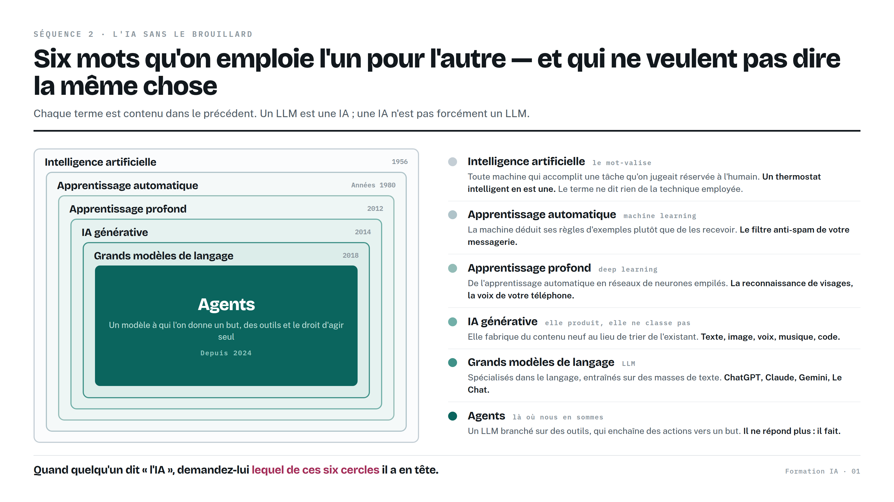
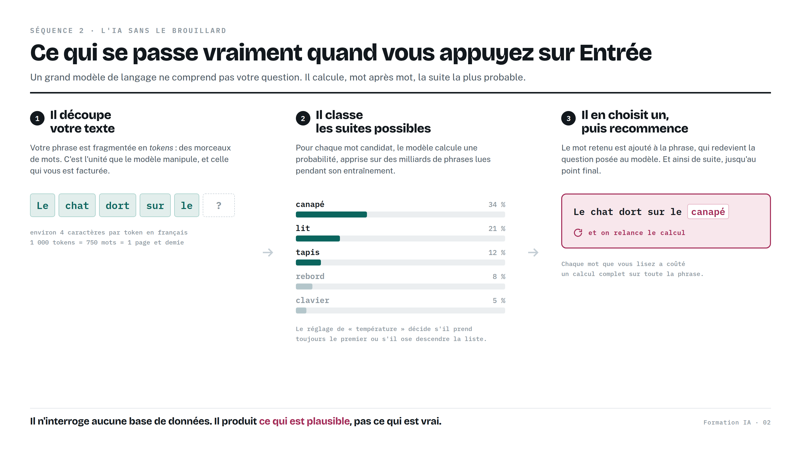
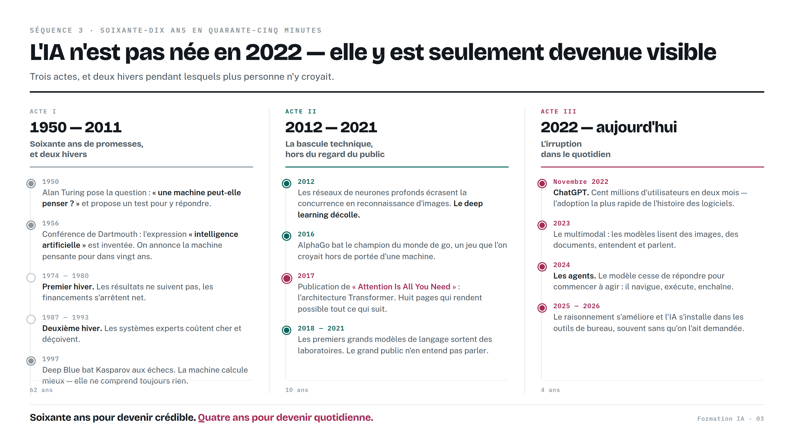
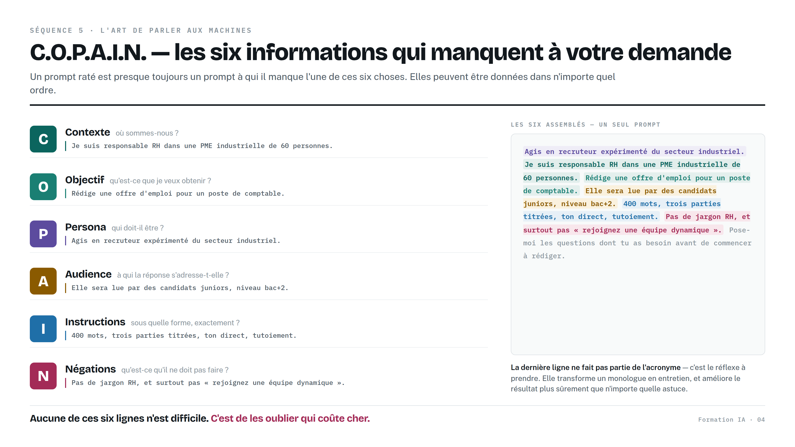
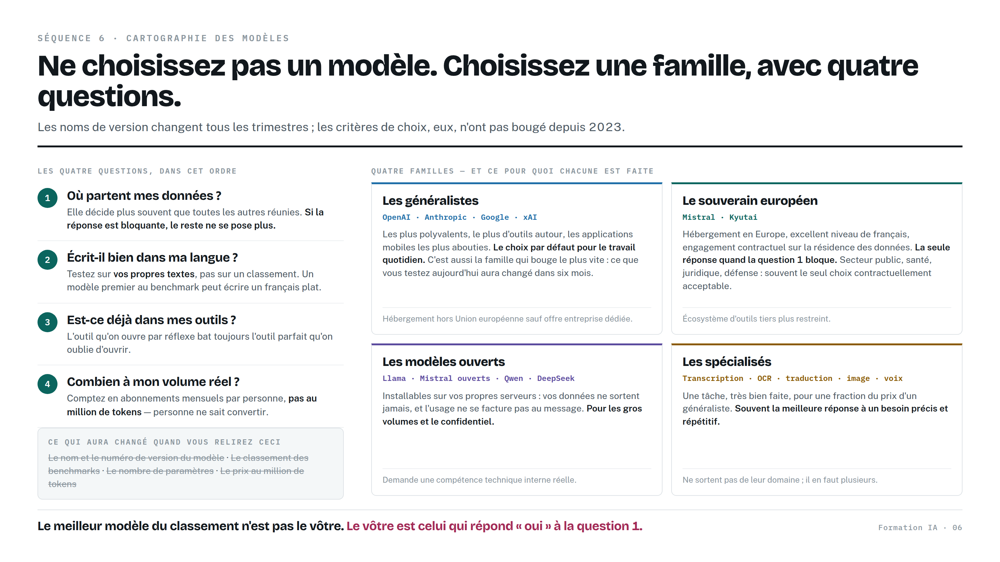
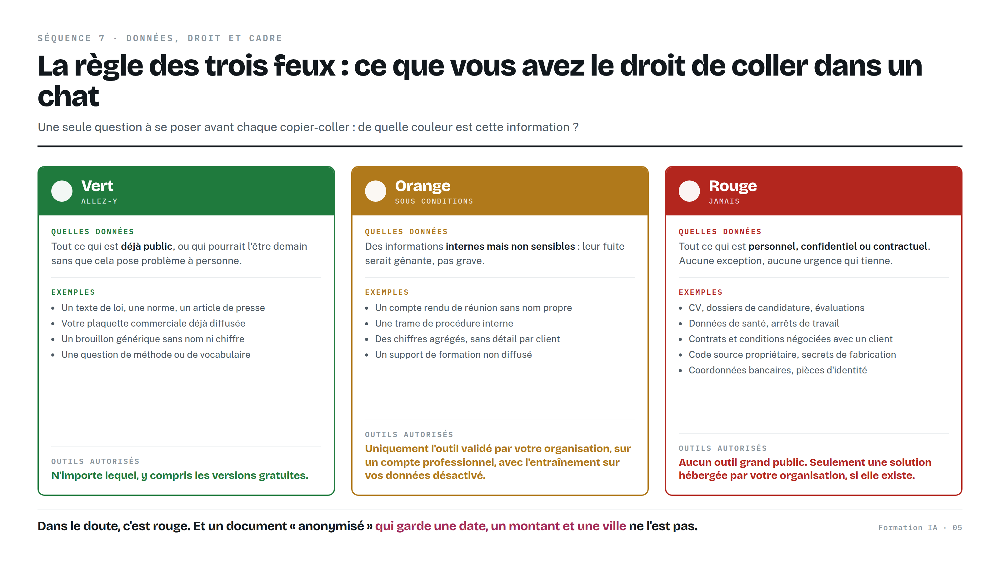
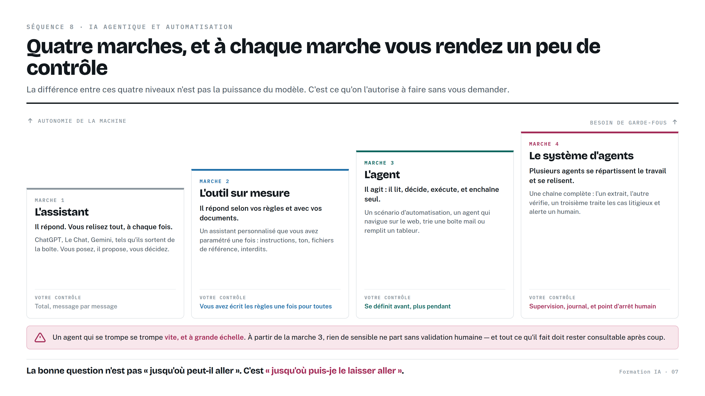
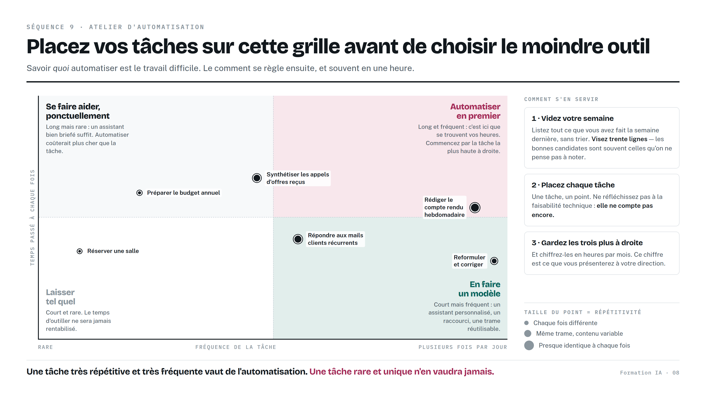

Tout ce qui a été dit pendant la formation, plus ce qu'il n'y avait pas le temps de dire : les explications, les neuf exercices, les liens vers les outils, une bibliothèque de prompts et un glossaire.
Il n'est pas fait pour être lu d'un bout à l'autre. Les parties 1 et 2 se lisent une fois, tranquillement, dans les jours qui suivent la formation. Les parties 3, 4 et 5 sont des pages de référence : on y revient quand la question se pose. La partie 7 est la seule à lire tout de suite, parce qu'elle décide de ce qui restera de ces deux jours.
Un signe à repérer : les encadrés bordés d'ocre signalent un point de vigilance juridique ou de confidentialité. Ce sont les seuls passages de ce manuel qui engagent votre responsabilité.
Le minimum à savoir sur le fonctionnement, sans une seule formule. Tout le reste du manuel en découle.
« Intelligence artificielle » ne désigne pas une technologie mais une famille. Six termes circulent, chacun contenu dans le précédent, et les confondre conduit à des malentendus coûteux — notamment quand un fournisseur vous vend « une solution IA » sans préciser laquelle.

Quand quelqu'un dit « l'IA », demandez-lui duquel de ces six niveaux il parle. Neuf fois sur dix, la question suffit à clarifier la conversation — et parfois à révéler que votre interlocuteur ne le sait pas lui-même.
Un grand modèle de langage ne comprend pas votre question au sens où vous l'entendez. Il calcule, mot après mot, la suite la plus probable. Ce mécanisme, répété des milliers de fois par seconde, suffit à produire des textes cohérents — et explique à peu près tous ses défauts.

Un modèle de langage n'est pas une base de données. Il n'y a rien à consulter à l'intérieur. Il n'a pas mémorisé des faits, il a intériorisé des régularités du langage. « Le président de la République française est… » a une suite très probable, et elle sera souvent juste. « Le numéro de téléphone du service client de… » a également une suite très probable : dix chiffres, plausibles, et faux.
Le problème n'est pas qu'il se trompe — tout le monde se trompe. Le problème est qu'il n'a aucun moyen interne de distinguer ce qu'il sait de ce qu'il complète. L'assurance du ton est rigoureusement constante, que la réponse soit exacte ou inventée. C'est ce qui rend l'erreur difficile à repérer, et c'est exactement ce qu'a montré le premier exercice de la formation.
Les outils modernes vont chercher des sources réelles avant de répondre : c'est ce que font Perplexity, NotebookLM, et les modes « recherche » des grands assistants. Cela réduit fortement les hallucinations sans les éliminer, car le modèle peut encore mal résumer une source correcte.
Le réflexe pratique tient en une phrase : s'il n'y a pas de lien cliquable, il n'y a pas de vérification possible. Et une source citée n'est pas une source lue.
L'IA n'est pas née en 2022 ; elle y est devenue visible. Connaître cette histoire évite deux erreurs symétriques : croire que tout va basculer demain, et croire que rien n'a changé.

Turing pose la question en 1950. La conférence de Dartmouth invente l'expression en 1956 et annonce la machine pensante pour dans vingt ans. Elle sera annoncée encore trois fois. Deux « hivers de l'IA » — 1974-1980 puis 1987-1993 — voient les financements s'effondrer après des promesses non tenues. En 1997, Deep Blue bat Kasparov : la machine calcule mieux que l'homme, et ne comprend toujours rien à ce qu'elle fait.
En 2012, les réseaux de neurones profonds écrasent la concurrence en reconnaissance d'images. En 2016, AlphaGo bat le champion du monde de go. En 2017, un article de huit pages intitulé Attention Is All You Need décrit l'architecture Transformer : c'est le vrai point de bascule, et le T de ChatGPT vient de là. Les premiers grands modèles sortent des laboratoires entre 2018 et 2021, sans que le grand public en entende parler.
Novembre 2022 : ChatGPT atteint cent millions d'utilisateurs en deux mois, l'adoption la plus rapide de l'histoire du logiciel. Suivent le multimodal en 2023, les agents en 2024, puis les progrès du raisonnement et l'intégration dans les outils de bureau.
Soixante ans pour devenir crédible, quatre ans pour devenir quotidienne. Ce n'est pas la technologie qui a accéléré, c'est sa diffusion — et ce décalage explique pourquoi tout le monde a simultanément l'impression d'être en retard. Vous ne l'êtes pas : personne n'a plus de quatre ans de pratique.
Le même modèle, la même question, et deux résultats sans rapport. Toute la différence tient dans la demande — et elle s'apprend en une heure.
Un prompt raté est presque toujours un prompt auquel il manque l'une de six informations. Vous les avez en tête ; la machine, non. L'acronyme sert seulement à ne rien oublier : l'ordre des six éléments n'a aucune importance.

Et une septième ligne qui ne fait pas partie de l'acronyme, mais qu'il faut prendre l'habitude d'ajouter :
Elle transforme un monologue en entretien. Le modèle vous demandera trois ou quatre précisions auxquelles vous n'auriez pas pensé, et la réponse finale sera meilleure que tout ce que vous auriez obtenu du premier coup. C'est l'astuce la plus rentable de cette formation, et la plus simple à retenir.
| L'erreur | Ce qu'il faut faire à la place |
|---|---|
| Demander sans contexte | Deux lignes sur qui vous êtes et pour quoi faire. C'est le plus gros gain, pour le plus petit effort. |
| Se contenter du premier jet | Le premier résultat est un brouillon de négociation. Trois allers-retours sont la norme, pas l'exception. |
| Poser une question trop large | « Fais-moi un plan de communication » ne veut rien dire. Découpez en étapes et traitez-les une par une. |
| Ne jamais dire ce qu'on ne veut pas | Trois interdits explicites suppriment plus de réécriture que dix consignes positives. |
| Croire un chiffre non sourcé | Tout chiffre, date, citation ou référence produit par le modèle est à vérifier ailleurs. Sans exception. |
| Continuer une conversation trop longue | Au-delà d'une certaine longueur, le modèle oublie le début. Ouvrez une nouvelle conversation et recollez l'essentiel. |
| Coller des données sensibles | Appliquez la règle des trois feux (partie 4). Anonymisez avant, pas après. |
| Réécrire le même prompt chaque semaine | Dès la troisième fois, enregistrez-le — ou faites-en un assistant (partie 5). |
Adaptez les parties entre crochets. Ces vingt formulations couvrent l'essentiel des usages professionnels courants ; elles sont volontairement écrites pour être copiées telles quelles.
Il sort un nouveau modèle tous les mois. Voici comment choisir sans avoir à suivre l'actualité — et l'annuaire des outils vus en formation.

Le nom et le numéro de version du modèle, son classement dans les benchmarks, son nombre de paramètres, son prix au million de tokens. C'est pourquoi ce manuel n'en cite aucun comme critère de décision : choisissez une famille, pas un modèle.
| Famille | Ce pour quoi elle est faite | Sa limite |
|---|---|---|
| Les généralistes OpenAI, Anthropic, Google, xAI |
Les plus polyvalents, le meilleur écosystème d'outils, les applications mobiles les plus abouties. Le choix par défaut pour le travail quotidien. | Hébergement hors Union européenne sauf offre entreprise dédiée. C'est aussi la famille qui change le plus vite. |
| Le souverain européen Mistral, Kyutai |
Hébergement en Europe, excellent niveau de français, engagement contractuel sur la résidence des données. Secteur public, santé, juridique, défense. | Écosystème d'outils tiers plus restreint, et moins d'intégrations toutes faites. |
| Les modèles ouverts Llama, Mistral ouverts, Qwen, DeepSeek |
Installables sur vos propres serveurs : les données ne sortent jamais, et l'usage ne se facture pas au message. Gros volumes et confidentialité forte. | Demande une compétence technique interne réelle, et du matériel. Ce n'est pas un choix d'utilisateur, c'est un choix d'organisation. |
| Les spécialisés Transcription, OCR, traduction, image, voix |
Une tâche, très bien faite, pour une fraction du prix d'un généraliste. Souvent la meilleure réponse à un besoin précis et répétitif. | Ne sortent pas de leur domaine. Il en faut plusieurs, et chacun a son abonnement. |
Les adresses et les conditions tarifaires changent, parfois d'un trimestre à l'autre. Vérifiez toujours la politique de confidentialité avant d'y déposer autre chose que du « feu vert » (partie 4). Un outil gratuit se paie généralement en données.
| Outil | À quoi il sert | Adresse |
|---|---|---|
| ChatGPT OpenAI | L'assistant le plus répandu. Mode vocal, création d'assistants personnalisés, analyse de fichiers. | chatgpt.com |
| Claude Anthropic | Réputé pour l'écriture longue et l'analyse de documents volumineux. | claude.ai |
| Gemini | Intégré à l'écosystème Google. Fort en traitement d'images et de très longs documents. | gemini.google.com |
| Le Chat Mistral AI — France | L'alternative européenne. Hébergement UE, très bon niveau de français. | chat.mistral.ai |
| Copilot Microsoft | Intégré à la suite bureautique. Utile si votre organisation est déjà sous Microsoft 365. | copilot.microsoft.com |
| Outil | À quoi il sert | Adresse |
|---|---|---|
| NotebookLM | Vous déposez vos documents, il ne répond qu'à partir de ceux-là, avec renvoi au passage source. Synthèse, carte mentale, quiz, podcast à deux voix. | notebooklm.google.com |
| Perplexity | Recherche web sourcée : chaque affirmation renvoie à une page réelle et ouvrable. | perplexity.ai |
| Comet Perplexity | Navigateur doté d'un agent capable de naviguer et d'agir sur les pages à votre place. | perplexity.ai/comet |
| Outil | À quoi il sert | Adresse |
|---|---|---|
| Nano Banana via Gemini / AI Studio | Génération et retouche d'image en langage naturel : supprimer un élément, changer un fond, aménager une pièce vide. | gemini.google.com · aistudio.google.com |
| Suno | Génération musicale complète à partir d'une description : jingle, générique, musique d'attente. | suno.com |
| ElevenLabs | Voix de synthèse et clonage vocal. Doublage, livre audio, messages d'accueil. | elevenlabs.io |
| Sora OpenAI | Génération de séquences vidéo à partir d'une description écrite. | sora.com |
| Veo | Génération vidéo, accessible via les outils Google. | labs.google |
| Outil | À quoi il sert | Adresse |
|---|---|---|
| n8n | Automatisation visuelle : relier une messagerie, un tableur, un modèle et une notification dans un scénario qui tourne seul. | n8n.io |
| Zapier · Make | Équivalents plus grand public, avec davantage de connecteurs prêts à l'emploi. | zapier.com · make.com |
| Emergent | Développement assisté : on décrit une application en français, elle est produite puis corrigée par itérations. | emergent.sh |
| Source | Pourquoi la consulter | Adresse |
|---|---|---|
| CNIL | Recommandations françaises sur l'IA et les données personnelles. La référence en cas de doute. | cnil.fr/fr/intelligence-artificielle |
| Règlement européen sur l'IA | Le texte lui-même, article par article, dont l'article 4 sur la littératie. | artificialintelligenceact.eu |
| Kit de ressources de la formation | Les liens, les prompts et les mises à jour post-formation. | hlp-studio.notion.site/ressource-kit-ia-vous |
| Superproductif | Lettre d'information de veille en français, orientée usages professionnels. | superproductif.fr/newsletter |
La partie la plus courte du manuel, et la seule qui engage votre responsabilité. À lire une fois en entier, puis à garder sous la main.
Une seule question à se poser avant chaque copier-coller : de quelle couleur est cette information ?

| Feu | Quelles données | Quels outils |
|---|---|---|
| Vert | Tout ce qui est déjà public, ou qui pourrait l'être demain sans gêner personne : textes de loi, normes, articles de presse, votre plaquette commerciale diffusée, un brouillon générique sans nom ni chiffre, une question de méthode. | N'importe lequel, y compris les versions gratuites. |
| Orange | Informations internes mais non sensibles : compte rendu sans nom propre, trame de procédure, chiffres agrégés sans détail par client, support de formation non diffusé. | Uniquement l'outil validé par votre organisation, sur un compte professionnel, avec l'entraînement sur vos données désactivé. |
| Rouge | Données personnelles, confidentielles ou contractuelles : CV et dossiers de candidature, données de santé, contrats et conditions négociées, code source propriétaire, secrets de fabrication, coordonnées bancaires, pièces d'identité. | Aucun outil grand public. Seulement une solution hébergée par votre organisation, si elle existe. |
Le faux anonyme. Un document dont on a retiré les noms mais qui garde une date, un montant et une ville n'est pas anonyme : il identifie souvent une seule personne ou un seul dossier. L'anonymisation est un travail sérieux, pas un remplacement de mots.
Le morceau innocent. Trois extraits « orange » collés dans trois conversations différentes peuvent, réunis, reconstituer une information rouge. Raisonnez sur l'ensemble de ce que vous confiez à un outil, pas sur chaque message pris isolément.
Depuis le 2 février 2025, les organisations qui déploient des systèmes d'IA doivent veiller au niveau de littératie de leurs collaborateurs — salariés, mais aussi prestataires agissant pour leur compte. L'obligation est proportionnée au rôle de chacun.
C'est une obligation de moyens et non de résultat, et elle reste très peu connue des PME. Cette formation y répond : conservez votre attestation de participation, elle documente la démarche de votre employeur.
Le RGPD continue de s'appliquer intégralement. Saisir des données personnelles dans un outil tiers constitue un traitement, et souvent un transfert hors Union européenne, avec tout ce que cela implique : base légale, information des personnes, registre des traitements, durée de conservation. Si votre organisation a un délégué à la protection des données, c'est à lui que revient l'arbitrage — pas à vous, et surtout pas au cas par cas.
Les six outils manipulés en journée 2, et la marche à suivre pour fabriquer votre propre assistant.
Vous déposez des fichiers — PDF, notes, pages web, vidéos — et l'outil ne répond plus qu'à partir de ceux-là, en renvoyant à chaque fois au passage source. Il produit aussi une synthèse, une carte mentale, un questionnaire, et un podcast à deux voix qui résume vos documents.
Les usages qui marchent le mieux : intégrer un nouvel arrivant à partir de vos procédures, préparer une réunion à partir de dix documents, réviser un dossier volumineux, transformer un support de formation en questionnaire.
Modifier une photo réelle en décrivant le changement en français : supprimer un élément gênant, changer un arrière-plan, meubler une pièce vide, décliner un visuel en plusieurs formats. Ce qui demandait un logiciel et une compétence se fait en une phrase.
Attention : les contenus générés portent une marque invisible qui permet de les identifier, et un visuel modifié documentant un bien ou un produit engage votre responsabilité commerciale.
Une conversation à voix haute, mains libres, avec possibilité d'interrompre. Cela change le rapport à l'outil : on cesse de rédiger une requête, on parle. Utile en déplacement, pour préparer un entretien ou traduire en direct. Le réflexe de confidentialité s'oublie plus vite à l'oral — tout ce qui est dit est transmis comme du texte.
Décrivez un style, une ambiance, des paroles, et obtenez un morceau complet en quelques minutes. Jingle, générique de podcast, musique d'attente téléphonique. Avant tout usage diffusé ou commercial, lisez les conditions : la question de ce que vous possédez réellement n'est pas tranchée de la même façon d'un outil à l'autre.
La différence essentielle avec un assistant classique : chaque affirmation renvoie à une page réelle que vous pouvez ouvrir. C'est le bon outil dès qu'il s'agit d'un fait, d'un chiffre ou d'une actualité. Comet va plus loin en donnant à l'agent la capacité de naviguer et d'agir sur les pages. Une source citée n'est pas une source lue : le résumé peut trahir une page pourtant correcte.
Produire une séquence à partir d'une description écrite, avec le son. Encore lent et coûteux, mais la progression est rapide. L'enjeu principal aujourd'hui n'est pas la production mais la réception : la question « comment reconnaître un faux » aura bientôt pour seule réponse « en vérifiant la source ».
Le passage du prompt jetable à l'outil qu'on rouvre tous les matins. Bonne nouvelle : configurer un assistant demande exactement les mêmes six lettres que le prompt de la partie 2. Vous savez déjà le faire — il reste à le ranger au bon endroit.
Faites tester votre assistant par quelqu'un d'autre, avec la consigne explicite d'essayer de le faire échouer : cas limite, demande ambiguë, information manquante, requête hors sujet. Ce que le test révèle est presque toujours la même chose : un contexte trop maigre, ou aucun exemple de sortie attendue. Corrigez, et retestez.
Quatre-vingts pour cent du gain s'obtiennent sans aucune fonctionnalité particulière : gardez vos meilleurs prompts dans un document partagé, avec un titre clair et une ligne d'explication. Une équipe qui partage vingt bons prompts va plus loin qu'une équipe où chacun configure son assistant dans son coin.
Le modèle cesse de répondre et commence à agir. La question devient : jusqu'où le laisser faire, et comment le savoir ?

Ce qui distingue ces quatre niveaux n'est pas l'intelligence du modèle : c'est ce qu'on l'autorise à faire sans vous demander. Un agent, ce n'est pas un modèle plus intelligent — c'est le même modèle, à qui l'on a donné des mains et l'autorisation de s'en servir.
Un agent qui se trompe se trompe vite, et à grande échelle : là où vous auriez envoyé un mauvais courrier, il en envoie deux cents. Trois garde-fous, non négociables : rien de sensible ne part sans validation humaine ; tout ce qu'il fait reste consultable après coup ; et il existe un moyen simple de tout arrêter.
Ce ne sont pas des freins : ce sont les conditions qui permettent d'y aller.

Le comment vient après, et il est souvent plus simple qu'on ne croit : un assistant configuré suffit pour les tâches courtes et fréquentes ; un scénario d'automatisation pour celles qui relient plusieurs outils ; et parfois, la bonne réponse est simplement d'arrêter de faire la tâche.
La seule partie à lire tout de suite. C'est elle qui décide de ce qui restera de ces deux jours dans un mois.
Vous les avez faits en salle ; les fiches à remplir sont dans le cahier d'exercices. Ce tableau sert à les refaire seul, ou à les faire faire à vos collègues.
| N° | Exercice | Durée | Ce qu'il produit |
|---|---|---|---|
| 1 | La biographie inventée | 15 min | Une démonstration vécue de ce qu'est une hallucination, et de sa dangereuse plausibilité. |
| 2 | La même question, deux modèles | 20 min | La conscience qu'il n'y a pas de meilleur modèle dans l'absolu, seulement un style qui vous convient. |
| 3 | Chasse aux hallucinations | 30 min | Votre carte de confiance : ce qu'on délègue, ce qu'on relit, ce qu'on ne demande jamais. |
| 4 | Avant / après C.O.P.A.I.N. | 35 min | Un prompt structuré et testé, réutilisable dès le lendemain. |
| 5 | Le choix du responsable informatique | 25 min | La compréhension que le critère décisif dépend du contexte, pas du classement. |
| 6 | Votre charte en cinq lignes | 15 min | Livrable 1 — votre charte personnelle d'usage. |
| 7 | Créez le vôtre, cassez celui du voisin | 45 min | Livrable 2 — un assistant configuré et testé par un pair. |
| 8 | Cartographiez vos tâches | 35 min | Livrable 3 — trois tâches automatisables, chiffrées en heures par mois. |
| 9 | Mon plan à trente jours | 30 min | Livrable 4 — la carte que vous emportez. |
Trois usages précis à mettre en place la semaine prochaine — pas
« utiliser l'IA », mais « rédiger mes comptes rendus de réunion avec l'assistant que j'ai créé ».
Un outil à maîtriser vraiment, plutôt que dix à essayer.
Une chose que vous ne ferez pas, tirée de votre charte.
Une personne à embarquer avec vous.
Les trente mots que vous entendrez, et les questions que tout le monde pose à la pause.
Pas en direct : le modèle est figé au moment où vous l'utilisez. En revanche, vos conversations peuvent être conservées et servir plus tard à entraîner une version suivante, selon l'offre et vos réglages. C'est exactement ce que désactive l'option d'amélioration du modèle dans les paramètres.
Parce qu'il choisit chaque mot dans une liste de candidats probables, avec une part d'aléatoire. C'est le réglage de température. Ce n'est pas de l'inconstance : c'est le fonctionnement attendu, et c'est aussi pourquoi il ne faut jamais s'appuyer sur une réponse unique pour un fait précis.
Pour un usage professionnel régulier, oui : les versions gratuites limitent la longueur des documents, l'accès aux modèles récents et souvent les fonctions les plus utiles comme la création d'assistants. Mais commencez gratuitement, et ne payez que l'outil que vous ouvrez déjà tous les jours.
Ce qui disparaît, ce sont des tâches — production de premier jet, mise en forme, saisie, tri, traduction de routine — plus rarement des métiers entiers. Ce qui prend de la valeur : la relation, le jugement, la responsabilité, la connaissance fine d'un contexte. La réponse honnête est que personne ne sait à dix ans, et que la meilleure protection reste la capacité à apprendre vite.
Techniquement oui, et c'est même un excellent usage pour comprendre un texte. Mais un contrat est presque toujours « feu rouge » : il contient des conditions négociées et des données de tiers. Ne le faites qu'avec un outil validé par votre organisation, et jamais pour remplacer un avis juridique.
Les détecteurs automatiques sont peu fiables et produisent beaucoup de faux positifs — ne fondez jamais une décision sur eux, particulièrement dans un cadre scolaire ou disciplinaire. Les indices humains restent plus sûrs : uniformité du rythme, absence d'exemples précis, transitions trop lisses, et cette manière très reconnaissable de n'avoir aucun avis.
Appliquez la règle des trois feux, restez au vert, et posez la question par écrit à votre hiérarchie ou à votre délégué à la protection des données. L'absence de décision est le principal facteur qui pousse les équipes vers les comptes personnels — c'est-à-dire vers exactement ce qu'une organisation prudente voudrait éviter.
Par une seule tâche, celle que vous faites le plus souvent et que vous aimez le moins. Écrivez-en le prompt avec les six lettres, testez-le trois fois, corrigez-le, puis gardez-le. Une tâche bien traitée vaut mieux que dix essais dispersés — et c'est ce qui vous donnera envie de continuer.